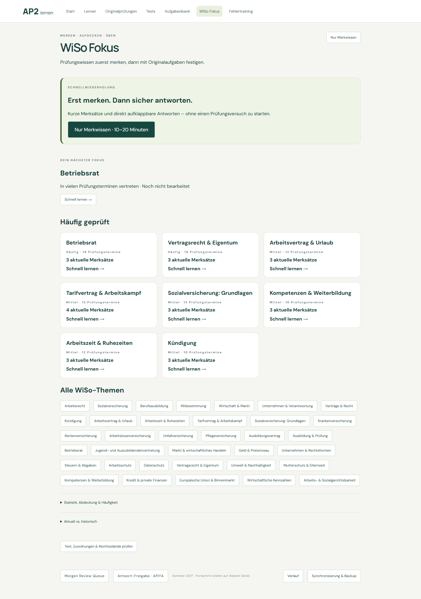
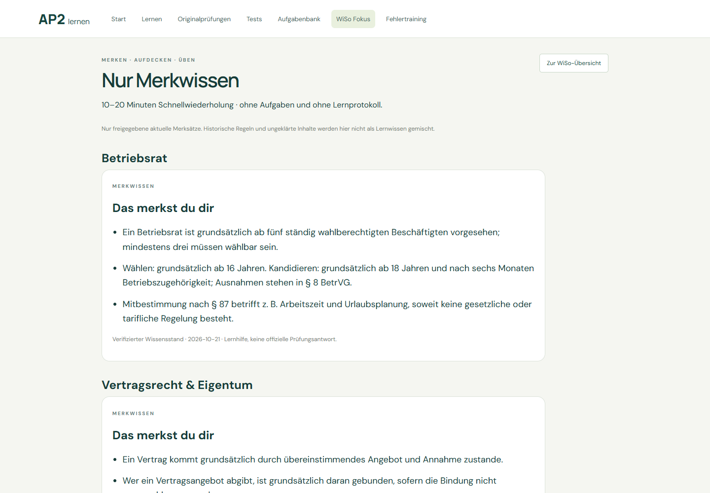
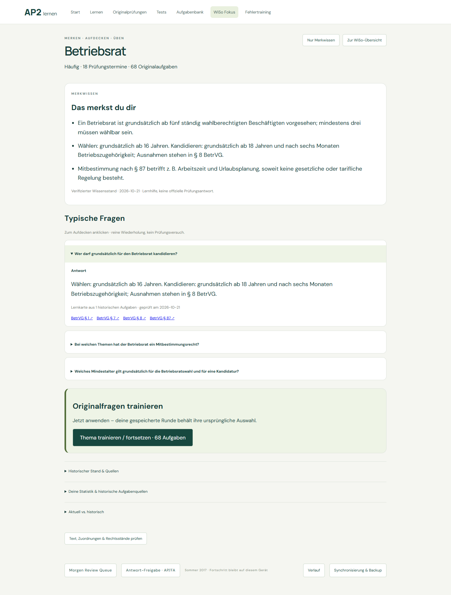
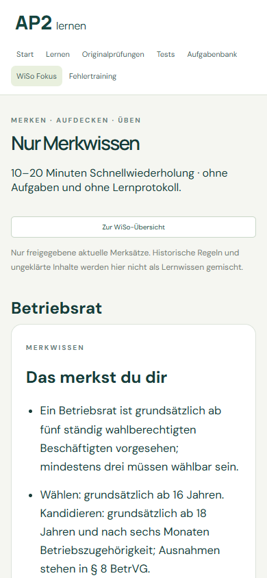
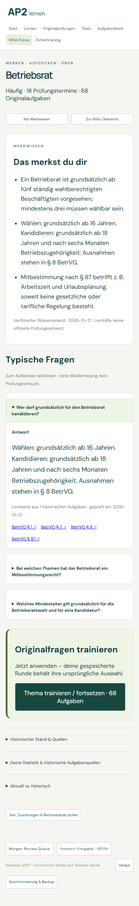

WiSo Fokus · Nur Merkwissen · Direkte Frage & Antwort
| Kategorie | Ergebnis |
|---|---|
| Klassifikationen gesamt | 456 |
| Automatisch akzeptiert ≥95 % | 0 |
| Maschinelle Vorschläge 80–95 % | 438 · ohne Einzelbestätigung nutzbar |
| Gewöhnliche manuelle Prüfung | 60 → 18 (−70 %) |
| Separate rechtliche Prüfung | 24 Themen; 0 zusätzliche Aufgabenflags |
Die vorhandenen Stammregeln bleiben bei 0,80. Keine künstliche Hochstufung auf 0,95. Grenzwerttests belegen, dass ein tatsächlich hoch bewerteter Vorschlag automatisch akzeptiert wird. Klassifikationssicherheit ist keine kalibrierte Wahrscheinlichkeit und keine Rechtsfreigabe.
Rechtliche Prüfungen betreffen insbesondere nicht erfasste gesetzliche Geltungsbeginne und separat zu prüfende Ersatzbeziehungen. Die konkret belegten Merksätze sind zum angegebenen Datum verifiziert; daraus wird kein unbekanntes Inkrafttretensdatum erfunden.
Zahlen und Prüfumfang · Schwellenwerte und rechtliche Ausnahme · Zuordnungsänderungen mit Textbelegen
28 belegte konkrete Themen, je 3–4 Merksätze, insgesamt 85 Merksätze und 36 direkt aufklappbare Antwortkarten. Oberthemen verwenden ihre Unterthemen. Konjunktur hat derzeit keine Originalaufgaben und wird nicht künstlich gefüllt.
Jede Karte ist an echte Fragen-IDs und eine aktuell verifizierte Wissensversion gebunden. Zwei nicht ausreichend passende Quellenzuordnungen wurden bei der Abschlussprüfung entfernt. Keine neuen Prüfungsaufgaben oder offiziellen Antworten wurden erzeugt.
Browservergleich aller IndexedDB-Tabellen vor und nach Q&A, Nur Merkwissen und Refresh: unverändert. Keine Attempts, ModuleProgress, TrainingProgress, WrongQuestionState oder Unsicher-Daten werden geschrieben. Bestehendes Originalfragentraining setzt exakt denselben TrainingRun fort.
Browserprüfungen · 239 Frontendtests bestanden; 3 Emulatorprüfungen lokal übersprungen, weiterhin Bestandteil der CI. Python-Gesamtsuite und zusätzliche Schwellenwertregressionen bestanden. Alle 456 Textcaches wiederverwendet; kein PDF neu gerendert.




